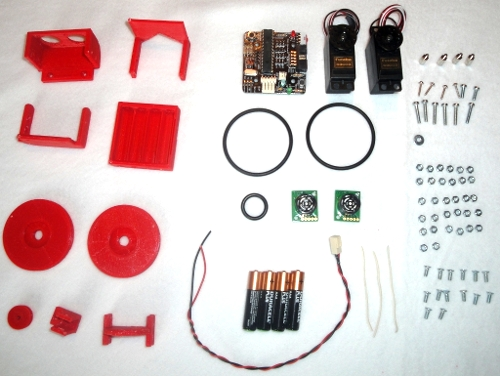

Os presentamos al robot Miniskybot V1.0, el primer robot educacional imprimible y open-source.
Tanto la mecánica, como la electrónica como el software están liberados bajo una licencia libre para que cualquiera lo pueda estudiar, modificar, construir, vender o distribuir. Además, sólo se han empleado herramientas libres para su diseño: Sistema operativo Linux, Openscad y Freecad para la mecánica, Kicad para la electrónica y el compilador SDCC para la programación en lenguaje C.
Esto es muy importante, ya que permite que se puedan realizar diseños derivados sin tener que pagar ningún tipo de licencia o realizar copias ilegales de software privativo.

Al ser un robot “libre e imprimible“, cualquier persona lo puede bajar e imprimir. La gente que no tenga acceso a una impresora 3D, siempre le puede pedir a un amigo que la tenga que se lo imprima, o ir a un “hacklab” que sí la tenga.
La mecánica en vez de ser ahora algo estático, se convierte en “evolutiva“. Es la comunidad de desarrolladores de Internet la que puede modificar los diseños haciendo que el robot evolucione, de igual manera que el software libre evoluciona.

Las piezas del MiniSkybot V1.0 están diseñadas con OpenScad y se han ensamblado “virtualmente” con el programa Freecad para ver su apariencia en 3D (figura superior).
Está¡ formado por 8 piezas imprimibles, y otras no-imprimibles: juntas tóricas, servos, electrónica, tornillería y cables.

En esta foto se pueden ver todas las piezas necesarias. Se utilizan dos servos de tipo Futaba 3003 (trucados)
y una tarjeta Skycube
como electrónica. Las herramientas de desarrollo software son las mismas que las empleadas para el
robot Skybot y
los robots modulares. 

Sin duda, con la llegada de estas impresoras 3D open-source y su aplicación a los robots, van a aparecer muchas ideas nuevas y diseños mecatrónicos sorprendentes. Abrocharos los cinturones porque ¡esto sólo es el comienzo!
Hola,
Impresionante trabajo.
Lo que me ha gustado mucho es que has conseguido desde el diseño inicial hasta la puesta en fabricación únicamente usando software libre.
Vete preparándome un kit para mi colección y otro de cube, que sacaré el tiempo dejado de las piedras para montármelos 🙂
—
Ricardo
hola chico me encanta vuestros proyectos son una pasada me llamo fran soy d eoviedo y me gustaria donde podria sacar material de la tarjerta skycube y una impresora donde podria comprarla o me costaria mucho y siempre me intereso el tema d ela robotica